Visualization¶
Every calibration claim in this package has a picture, and the pictures are built in two
layers: probcal.curves computes plotting-ready dataclasses with numpy alone, and
probcal.plots renders them when matplotlib (the [viz] extra) is installed. The
separation means every curve is available to any backend, or to no backend at all in a batch
report, and the rendering layer adds convention, not computation.
Reliability constructions¶
The reliability diagram plots estimated event rate against predicted probability; a
calibrated model traces the diagonal. probcal builds it four ways, because the
construction is the estimator and inherits its trade-offs. reliability_binned groups
predictions (equal-mass by default), plotting each bin's mean prediction against its event
rate with a Wilson confidence interval, the binomial interval that behaves sensibly at
the small counts and extreme rates a PD portfolio produces. Data density is shown by the
per-class rug along the axis edges (a count-bar margin remains available via
counts=True), so sparse regions announce themselves. reliability_loess and
reliability_spline draw the smooth versions in the tradition of Austin and Steyerberg
(2014), trading the binning artifacts for a bandwidth choice; plotted together with the
binned points they distinguish real curvature from bin noise. Every curve object carries
both probability-scale and logit-scale coordinate arrays, so the choice of scale is made at
plot time, not at computation time.
reliability_smooth (KernelReliabilityCurve) is the fourth construction, and the only
one whose bandwidth is not a free choice: it reuses metrics.smooth_ece's fixed-point
bandwidth sigma_star, with the same equal-width logit lattice and the same truncated
Gaussian kernel, so curve.smooth_ece reproduces the metric exactly rather than merely
tracking it, and the diagram and the number it is read against always agree. Because
sigma_star is tuned for the smECE aggregate rather than for a low-variance curve, the
pointwise estimate is noisier than reliability_loess's wide, fraction-of-data bandwidth
and needs a larger sample before it settles; its confidence ribbon (a seeded bootstrap of
(y, p, sample_weight) triples, n_boot=0 to disable) is computed at that one fixed
sigma_star, so it reads as uncertainty in the rate given the bandwidth, not uncertainty
in the bandwidth choice itself.
Why the logit scale is the flagship¶
On a low-PD portfolio, the probability-scale reliability diagram is a picture of almost nothing: the entire book lives between 0 and 0.1, the region a linear axis compresses into its left margin.
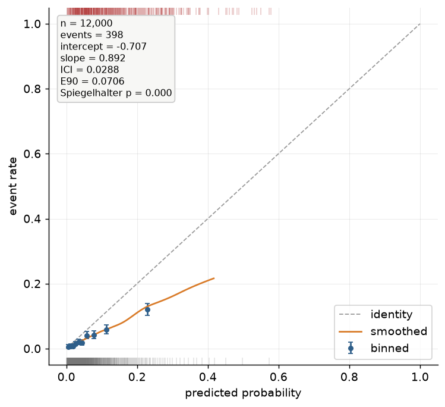
The same data on the logit scale, where the miscalibration becomes readable:
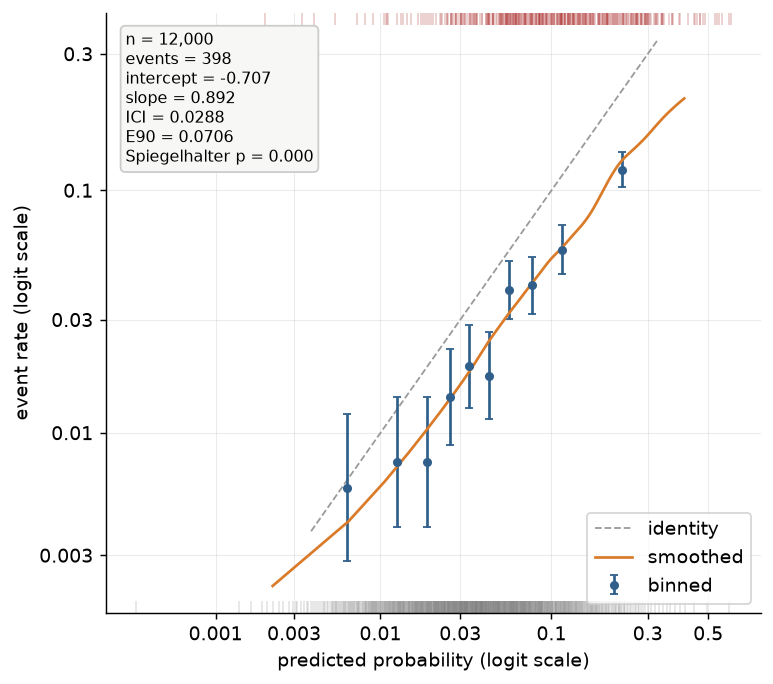
Plotting on the logit scale stretches exactly where the decisions are.
The difference between 0.5% and 1% PD is a factor of two in price and a full grade on a
masterscale, and it is invisible on \( [0,1] \) but a fixed distance in log-odds.
plot_reliability(scale="logit") is therefore the package's default recommendation for
credit work, with axis ticks labeled in probabilities at logit positions, so the reader
keeps probability intuition while the geometry keeps resolution. Parametric calibrators are
straight lines on this scale (slope and intercept readable by eye), the
offset is a vertical translation, and tail miscalibration, the kind that
costs money at the approval cutoff, stops hiding in the corner.
The annotated reliability diagram¶
Passing the raw y/p to plot_reliability upgrades the diagram in the rms::val.prob
tradition: the picture carries its own numbers. The stats box, computed by
probcal.metrics.reliability_summary and never inside the plotting layer, reports the sample
size and event count, the calibration intercept and slope (level and spread of
the miscalibration in log-odds), ICI and E90 (typical and near-worst absolute distance to
the smoothed curve, in probability units), and Spiegelhalter's p-value (the classical
unbiasedness test). One glance answers the three questions a validator asks of a
reliability diagram: how much data, how wrong, and is it statistically distinguishable from
calibrated. The rug along the axis edges marks events (top) and non-events (bottom),
deterministically thinned to at most 1000 marks per class (sorted, evenly strided, no RNG
anywhere in plotting), so two renders of the same data are always identical. All probcal
plots style themselves through a per-call rc_context; your global matplotlib
configuration is never touched.
risk_dist picks the style of that density layer: "rug" (the default, described above),
"split" (a 30-equal-mass-bin spike histogram of p, events upward and non-events downward,
from a shared y = 0.12 baseline in axis-fraction coordinates, since axis coordinates
cannot go negative; heights are scaled so whichever class peaks higher reaches the full
0.12), or None for no density layer at all. rug=False turns the layer off regardless of
risk_dist, equivalently to risk_dist=None.
risk_dist="split" in place of the default rug:
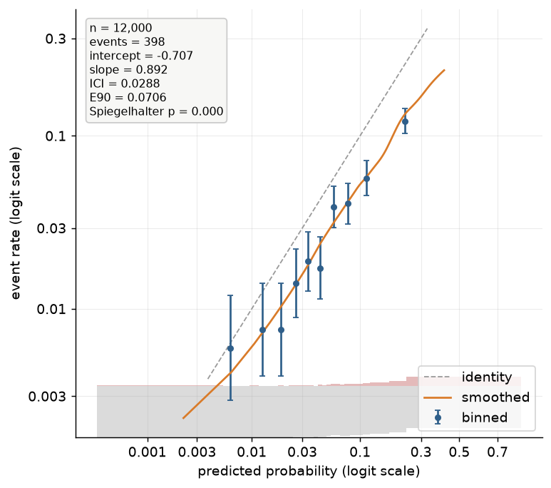
stats swaps in an alternative box in place of the annotate one above: stats=True
reports n, events, intercept, slope, ICI, smECE, Brier (smECE and Brier are strictly
proper / self-consistent scores that E90 and Spiegelhalter's test do not cover); passing a
MetricReport (e.g. from metrics.evaluate) instead reports name = value [ci_low, ci_high]
for whichever of intercept, slope, ici, smooth_ece, brier the report carries, plus
n/events read off y. annotate is ignored whenever stats is truthy, so the two boxes
never stack.
Passing a KernelReliabilityCurve (from reliability_smooth) as smooth renders it as a
density-weighted curve rather than a plain line: a variable-width LineCollection (wide
where predictions are dense, linewidths = 0.5 + 4.0 * density / density.max()), the
miscalibration area shaded between the curve and the identity, its bootstrap ribbon, and an
smECE = ... readout in the bottom-right corner, the same convention that fills the fourth
reliability construction described above.
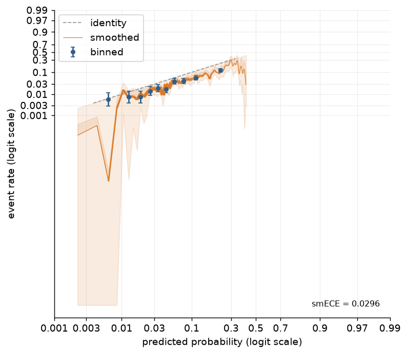
The calibration belt¶
A smoothed reliability curve without uncertainty invites overinterpretation. The GiViTI
calibration belt (Nattino, Finazzi and Bertolini, 2014) answers with a confidence region:
fit a polynomial logistic recalibration of the outcome on \( \operatorname{logit}(p) \),
selecting the polynomial degree by forward likelihood-ratio testing (capped at degree 4),
then invert the likelihood-ratio acceptance region pointwise into a band around the fitted
curve at the requested confidence levels (80% and 95% by default). Where the band excludes
the diagonal, the data affirmatively reject calibration in that region: a localized,
test-backed statement no eyeballed curve provides. The associated p-value summarizes
the global test. The construction (Nattino et al., 2017, describe the practitioner-facing
version) is reimplemented in probcal from the papers, on the numpy-only χ² machinery of
probcal._math.
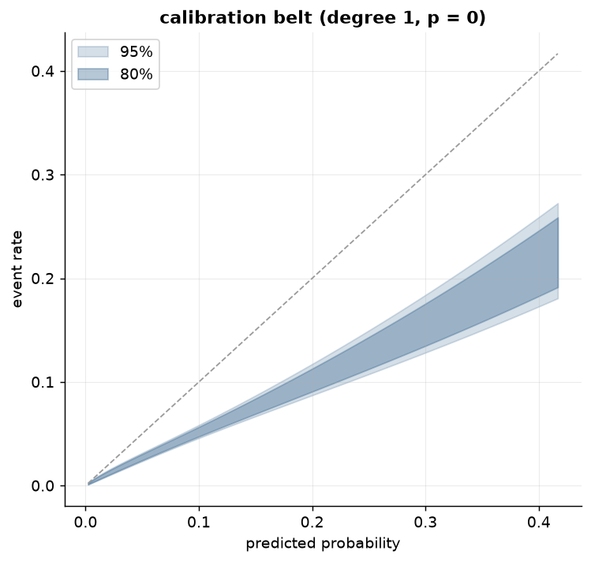
The ECCE drift walk¶
The ECCE sorts observations by prediction and accumulates the residuals; the
resulting walk hovers near zero under calibration and drifts under systematic error, and
where it drifts localizes the miscalibration along the score range without any binning or
bandwidth choice. ecce_curve computes the walk (its stat_max agrees exactly with
metrics.ecce) and plot_ecce renders one or several; raw versus calibrated is the
natural pair. Each curve's maximum drift is quoted in the legend and marked by a dotted
tick at the position where it occurs. The grey envelope is ±2 pointwise standard
deviations of the walk under calibration: an honest reading aid, not a simultaneous
confidence band. A walk can exit a pointwise envelope somewhere by chance more often than
the nominal level suggests, and the formal max-statistic test of Arrieta-Ibarra et al.
(2022) is not implemented in this release.
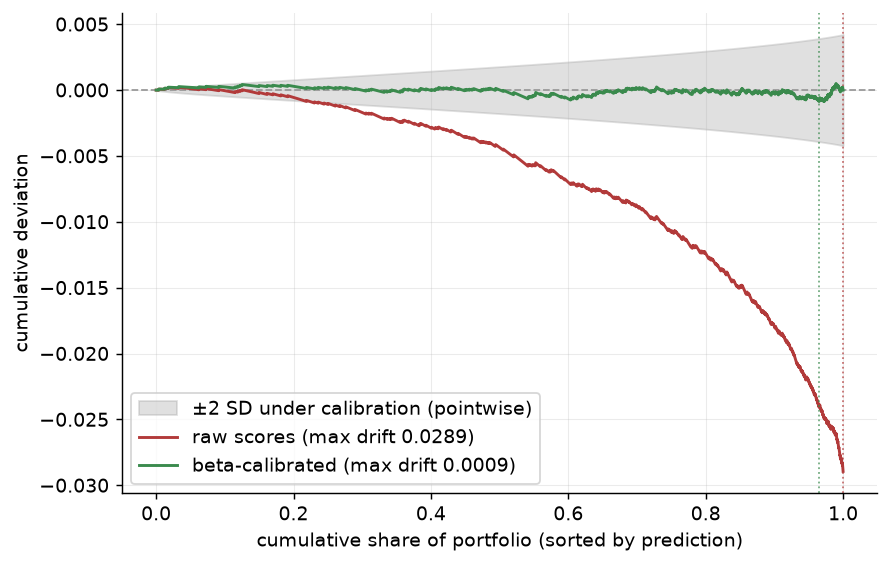
The per-grade backtest chart¶
plot_grade_backtest turns a per-grade backtest result into the chart a
validation committee reads: observed default rates as circles colored by the grade's
traffic light, the assigned PDs as wide dashes underneath, and grey whiskers spanning each
grade's 90% display interval, either the central Jeffreys posterior interval or the
Clopper–Pearson interval, matching the test that produced the result. The intervals are
display companions, not the test: the verdict is carried by the lights from the unchanged
one-sided tests, which is why no p-values appear on the canvas. Per-grade n and k
annotations keep the sample sizes honest, and the log-scale y-axis (the default) keeps a
masterscale spanning two orders of magnitude readable.
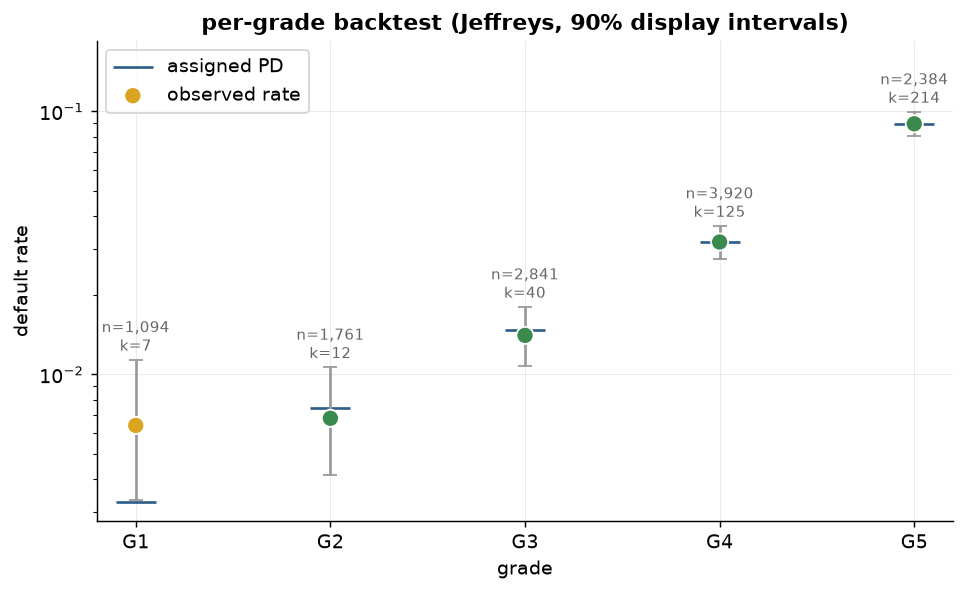
The offset audit chart¶
plot_offset_audit draws a fitted LogitOffset as what it is: a vertical
translation on the logit scale. The blue offset map runs parallel to the grey identity at
distance \( \delta \); the red and green markers place the pre- and post-adjustment
central tendencies, joined by the annotated shift arrow, with the target mean as a thin
reference line when the offset was fitted in target-mean mode. The stats box reads
everything from the fitted attributes (\( \delta \) in log-odds, the odds factor
\( e^{\delta} \), both means, and the fit timestamp), so the chart audits the stage
itself; for the before/after guardrail comparison on outcomes, audit_report() remains
the tool.
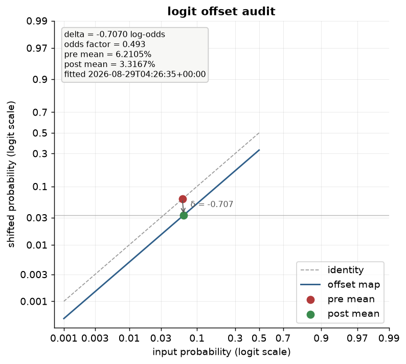
The attributes diagram¶
plot_attributes draws the classic Hsu and Murphy (1986) attributes diagram, which puts a
reliability curve in the context of two references at once instead of just the identity.
The horizontal and vertical lines at the weighted base rate \( \bar y \) mark climatology,
the constant forecast \( p = \bar y \) that carries no resolution. The no-skill line
\( y = (x + \bar y) / 2 \), equidistant between climatology and the identity at every \( x
\), is the boundary the Brier skill score is measured against. The light green shading
marks where a point beats climatology pointwise, \( (y - x)^2 \le (x - \bar y)^2 \): closer
to the identity than to the no-resolution line. method="binned" overlays
reliability_binned as markers scaled by bin count (n_bins=10 by default, the same
default as the curve itself); method="corp" overlays the CORP PAV step fit instead,
trading the binning choice for the same discretization-free construction used by
plot_corp, whose reliability diagram, bands, and score decomposition are covered in
CORP and score decomposition. scale="logit" transforms every drawn quantity
(identity, references, shading, and curve alike) through the same clipped logit as the rest
of the package, so a low-PD portfolio stays readable.
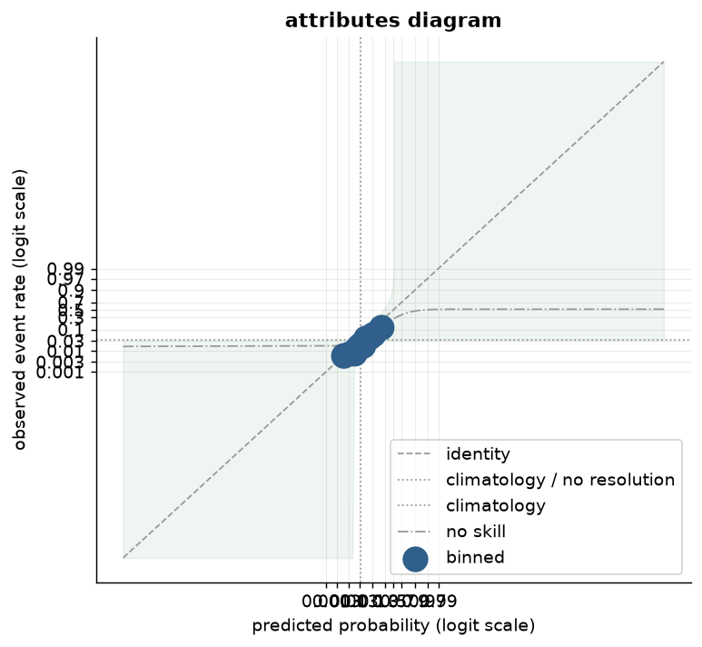
The Murphy diagram¶
plot_murphy renders metrics.murphy_curve, the elementary-score view of the Brier score
described in Metrics and tests, as either a set of labelled lines
({name: MurphyCurve}, or a single curve with no legend) or, with diff=True, the pointwise
difference between exactly two named forecasts. The diff form needs the raw (y, p) pairs
rather than precomputed curves, because a MurphyCurve retains only its threshold grid and
scores, not the data: it recomputes both curves on a shared threshold grid, differences them,
and adds a seeded paired bootstrap band (resampling the same indices for both forecasts, since
the comparison is on the same observations) at the 5th/95th percentile, plus a zero reference
line. Because the Murphy diagram decomposes the Brier difference across the whole decision
spectrum instead of collapsing it to one number, a diff that crosses zero shows exactly which
threshold range favors which forecast, information a single Brier-score comparison discards.
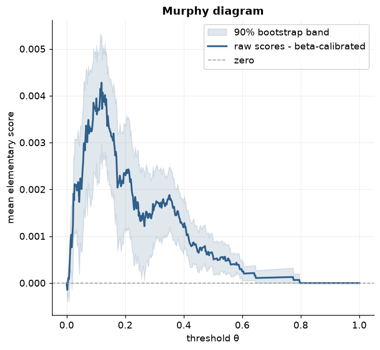
The remaining plots¶
Three further views complete probcal.plots. plot_comparison(before, after) puts
pre- and post-calibration (or pre- and post-offset) reliability on one axis pair, the
picture a validation report leads with. plot_interval draws
Venn–Abers interval widths against score, localizing where
calibration uncertainty concentrates. plot_selection renders the
SelectionReport as a ranked dot plot with fold-spread whiskers and
guardrail markers: the table, made presentable. All of them accept the dataclasses from
probcal.curves, and none of them is importable without the [viz] extra; the import
guard raises with the install instruction rather than a bare ImportError.
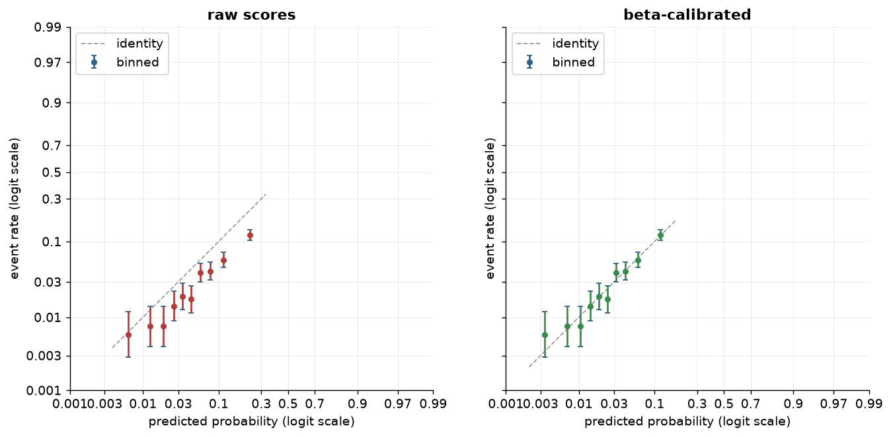
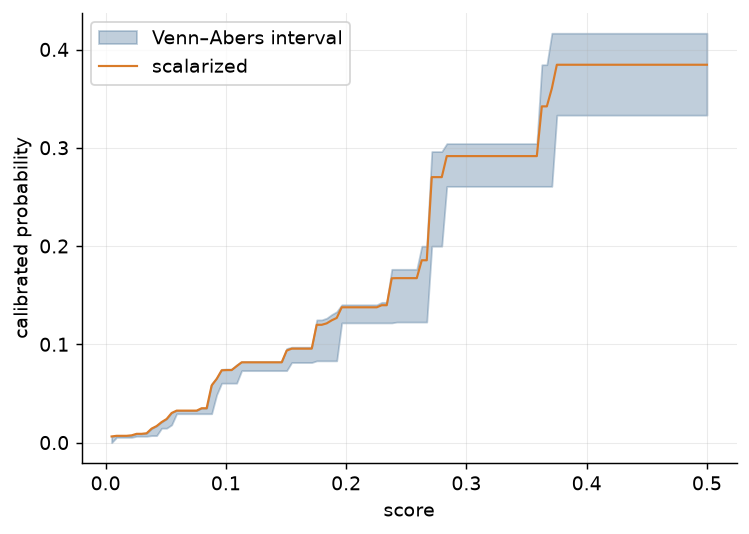
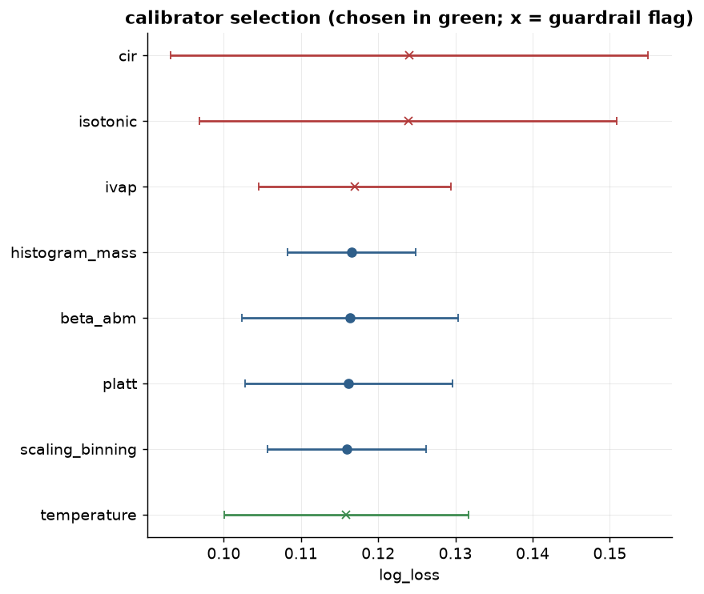
In probcal¶
# s_cal, y_cal: held-out calibration scores and outcomes
import numpy as np
from probcal import BetaCalibrator, LogitOffset, calibration_belt, reliability_binned, reliability_loess
from probcal.curves import ecce_curve, reliability_smooth
from probcal.metrics import jeffreys_grade_test, reliability_summary
from probcal.plots import ( # [viz] extra
plot_belt, plot_comparison, plot_ecce, plot_grade_backtest,
plot_offset_audit, plot_reliability,
)
s_raw, y = s_cal, y_cal # raw, miscalibrated scores
p = BetaCalibrator().fit(s_raw, y).predict_proba(s_raw) # calibrated probabilities
curve = reliability_binned(y, p, n_bins=10) # Wilson CIs, both scales
smooth = reliability_loess(y, p)
belt = calibration_belt(y, p)
print(belt.degree, belt.p_value)
print(reliability_summary(y, p)) # the stats-box numbers, standalone
ax = plot_reliability(curve, smooth=smooth, scale="logit", y=y, p=p) # the flagship view
kernel = reliability_smooth(y, p) # the smECE-consistent construction
ax = plot_reliability(
curve, smooth=kernel, scale="logit", y=y, p=p,
stats=True, risk_dist="split", # n/events/.../smECE/Brier box + spike histogram
)
ax = plot_belt(belt)
fig = plot_comparison(reliability_binned(y, s_raw), reliability_binned(y, p))
ax = plot_ecce([ecce_curve(y, s_raw), ecce_curve(y, p)], labels=["raw", "calibrated"])
ax = plot_grade_backtest(jeffreys_grade_test(y, p, grades))
fitted_offset = LogitOffset(target_mean=float(np.mean(y))).fit(p)
ax = plot_offset_audit(fitted_offset) # a fitted LogitOffset stage
References¶
- Arrieta-Ibarra, I., Gujral, P., Tannen, J., Tygert, M., Xu, C. (2022). "Metrics of Calibration for Probabilistic Predictions." Journal of Machine Learning Research 23(351), 1–54.
- Austin, P. C., Steyerberg, E. W. (2014). "Graphical assessment of internal and external calibration of logistic regression models by using loess smoothers." Statistics in Medicine 33(3), 517–535.
- Hsu, W.-R., Murphy, A. H. (1986). "The attributes diagram: A geometrical framework for assessing the quality of probability forecasts." International Journal of Forecasting 2(3), 285–293.
- Nattino, G., Finazzi, S., Bertolini, G. (2014). "A new calibration test and a reappraisal of the calibration belt for the assessment of prediction models based on dichotomous outcomes." Statistics in Medicine 33(14), 2390–2407.
- Nattino, G., Lemeshow, S., Phillips, G., Finazzi, S., Bertolini, G. (2017). "Assessing the Calibration of Dichotomous Outcome Models with the Calibration Belt." Stata Journal 17(4), 1003–1014.